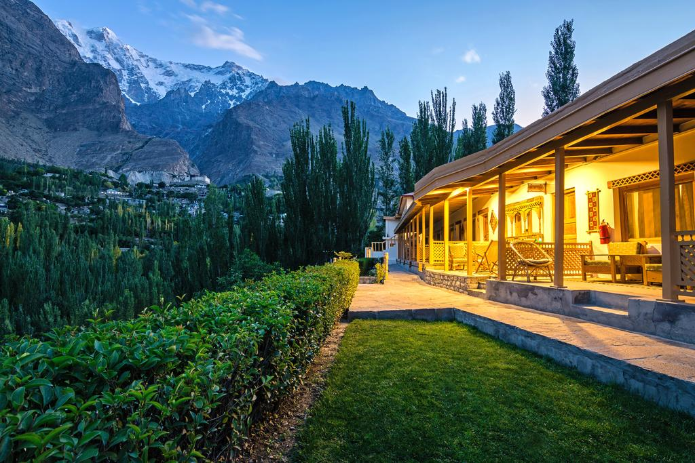

Lies in the mountains of Northern Pakistan, the gigantic and colorful Hunza Valley far in the Gilgit Baltistan region near to China border. Hunza Valley is one of the most beautiful places to visit in the northern areas of Pakistan. For a lot of years now, Hunza valley has been offering its wanderers the history and culture along with their colorful traditions. Moreover to historical and traditional expects, Hunza valley is famous all around the globe among the travelers for its immense natural landscape that can put a strong impact on the mind of travelers. However, the valley has a lot more to discover.
Hunza Valley

Click Here

Click Here